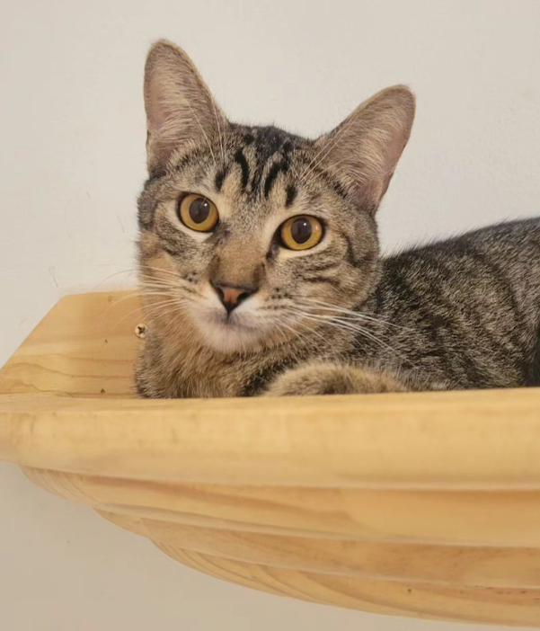

Floyd

Descrição: Esse fofinho é o Floyd, um gatinho rajadinho que foi resgatado junto de sua irmãzinha Pink, que foi adotada. No começo ele é tímido, como podem ver, mas assim que pega intimidade, logo se solta e se dá bem com todos, inclusive com outros gatos.
Lembrando que é uma adoção para casas sem rota de fuga ou apartamento telado.
Idade: Aproximadamente 7 meses.
Comportamento: Tímido e se dá bem com todos.
Informações: É castrado, vacinado e testado para FIV e FELV.
Sexo: